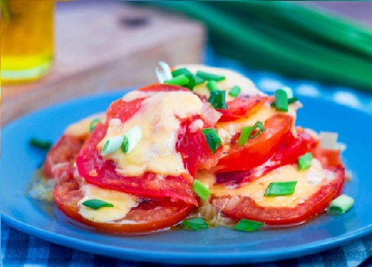

Рецепты

Ингредиенты:
Помидоры 300 гр, лук репчатый 70 гр,чеснок 1 зубч., твёрдый сыр 60 гр, сольпо вкусу, перец черный/молотый по вкусу, растительное масло 2 стол.л.
Рецепт:
1. Подготовьте необходимые продукты для приготовления помидоров с сыром на сковороде. Вам потребуются: свежие помидоры, репчатый лук, зубок чеснока, растительное масло, соль, черный молотый перец, твердый сыр. Помидоры желательно выбирать в меру плотные, спелые, сочные. Идеальный вариант - сезонные грунтовые. Сыр можно брать любой, какой вам нравится по вкусу, важно, чтобы он легко плавился.
2. Репчатый лук почистите и нарежьте мелкими кубиками. Зубок чеснока также почистите и нарежьте меленько. На сковородке разогрейте растительное масло, выложите измельченные лук и чеснок. Обжаривайте на среднем огне периодически помешивая до полупрозрачности.
3. Помидоры промойте, нарежьте кружочками толщиной около 5-6 мм. Выложите их равномерным слоем на обжаренные лук и чеснок. Посолите и поперчите помидоры. Накройте сковородку крышкой и томите на слабом огне около 10 минут. Помидоры должны размягчится. Огонь должен быть достаточно сильным, чтобы помидоры хорошенько протушились, но и таким, чтобы не подгорел лук и чеснок.
4. Готовые помидоры можно снять с огня. Твердый сыр нарежьте тонкими пластиночками и выложите на готовые помидоры. Накройте крышкой сковородку на несколько минут, чтобы сыр расплавился.
5. Готовые помидоры с сыром на сковороде можно подавать как в горячем, так и в охлажденном виде. При подаче готовое блюдо было бы неплохо дополнить измельченной зеленью на ваш вкус - помидорчики станут ярче и аппетитнее. Я использовала нарезанный наискосок зеленый лук.
Готово! Приятного аппетита!
Шпагралка:
Выбирайте помидоры среднего размера, чтобы кружочки были не сильно большими, но и не сильно маленькими. Помимо черного молотого перца можно взять такую приправу как итальянские или прованские травы. Этот набор пряностей идеально подойдет для такого сочетания как помидоры и сыр. Если сока выделится слишком много, то излишки можно выпарить.

14 ноября, 2022 года.